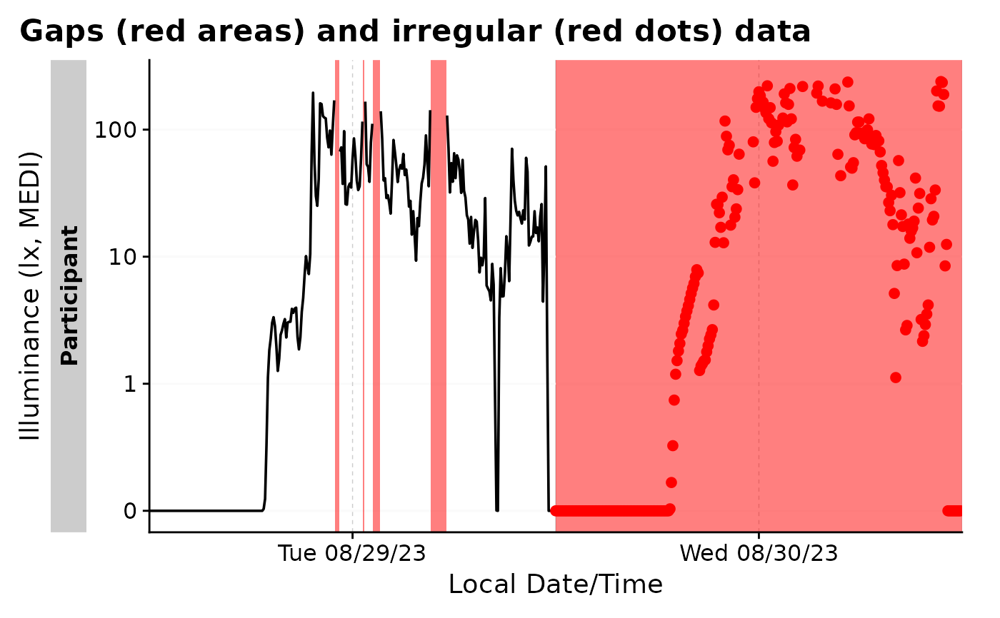

gg_gaps() is built upon gg_days(), gap_finder(), and gg_state() to
visualize where gaps and irregular data in a dataset are. The function does
not differentiate between implicit gaps, which are missing timestamps of
the regular interval, explicit gaps, which are NA values. Optionally, the
function shows irregular data, which are datapoints that fall outside the
regular interval.
Usage
gg_gaps(
dataset,
Variable.colname = MEDI,
Datetime.colname = Datetime,
fill.gaps = "red",
col.irregular = "red",
alpha = 0.5,
on.top = FALSE,
epoch = "dominant.epoch",
full.days = TRUE,
show.irregulars = FALSE,
group.by.days = FALSE,
include.implicit.gaps = TRUE,
...
)Arguments
- dataset
A light logger dataset. Expects a
dataframe. If not imported by LightLogR, take care to choose a sensible variable for thex.axis..- Variable.colname
Variable that becomes the basis for gap analysis. expects a symbol
- Datetime.colname
The column that contains the datetime. Needs to be a
POSIXctand part of the dataset.- fill.gaps
Fill color for the gaps
- col.irregular
Dot color for irregular data
- alpha
A numerical value between 0 and 1 representing the transparency of the gaps Default is 0.5.
- on.top
Logical scalar. If
TRUE, the states will be plotted on top of the existing plot. IfFALSE, the states will be plotted underneath the- epoch
The epoch to use for the gapless sequence. Can be either a
lubridate::duration()or a string. If it is a string, it needs to be either '"dominant.epoch"' (the default) for a guess based on the data or a validlubridate::duration()string, e.g.,"1 day"or"10 sec".- full.days
Logical. Whether full days are expected, even for the first and last measurement
- show.irregulars
Logical. Show irregular data points. Default is
FALSE.- group.by.days
Logical. Whether data should be grouped by days. This can make sense if only very few days from large groups are affected
- include.implicit.gaps
Logical. Whether the time series should be expanded only the current observations taken.
- ...
Additional arguments given to
gg_days(). Can be used to change the color or other aesthetic properties.
Value
a ggplot object with all gaps and optionally irregular data.
Groups that do not have any gaps nor irregular data will be removed for
clarity. Null if no groups remain
Examples
#calling gg_gaps on a healthy dataset is pointless
sample.data.environment |> gg_gaps()
#> No gaps nor irregular values were found. Plot creation skipped
#creating a gapped and irregular dataset
bad_dataset <-
sample.data.environment |>
aggregate_Datetime(unit = "5 mins") |>
filter_Date(length = "6 days") |>
dplyr::mutate(
Datetime = dplyr::if_else(
lubridate::date(Datetime) == max(lubridate::date(Datetime)),
Datetime, Datetime + 1
)
) |>
dplyr::filter(MEDI <250)
bad_dataset |> has_gaps()
#> [1] TRUE
bad_dataset |> has_irregulars()
#> [1] TRUE
#by default, gg_gaps() only shows gaps
bad_dataset |> gg_gaps()
#> Warning: Removed 1 row containing missing values or values outside the scale range
#> (`geom_line()`).
#it can also show irregular data
bad_dataset |> gg_gaps(show.irregulars = TRUE)
#> Warning: Removed 1 row containing missing values or values outside the scale range
#> (`geom_line()`).

#if a Group has good data, it will not show up
half_bad_dataset <-
bad_dataset |> dplyr::filter(Id == "Participant") |>
rbind(sample.data.environment |> dplyr::filter(Id == "Environment"))
#just to show that both are identical
dplyr::group_keys(half_bad_dataset)
#> # A tibble: 2 × 1
#> Id
#> <fct>
#> 1 Environment
#> 2 Participant
dplyr::group_keys(bad_dataset)
#> # A tibble: 2 × 1
#> Id
#> <fct>
#> 1 Environment
#> 2 Participant
half_bad_dataset |> gg_gaps()
#> Warning: Removed 1 row containing missing values or values outside the scale range
#> (`geom_line()`).